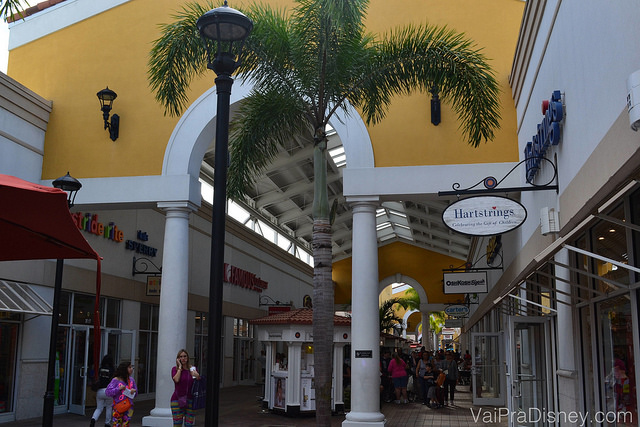
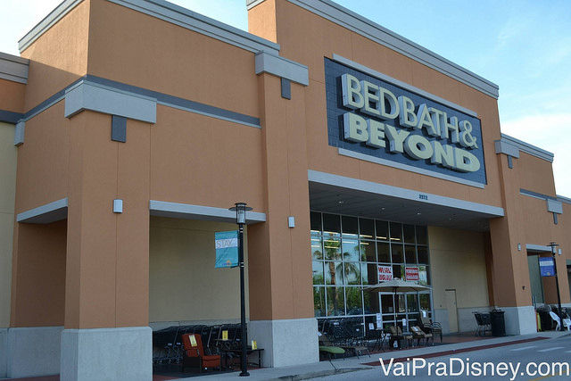
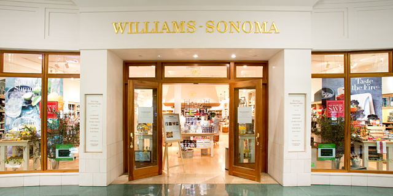
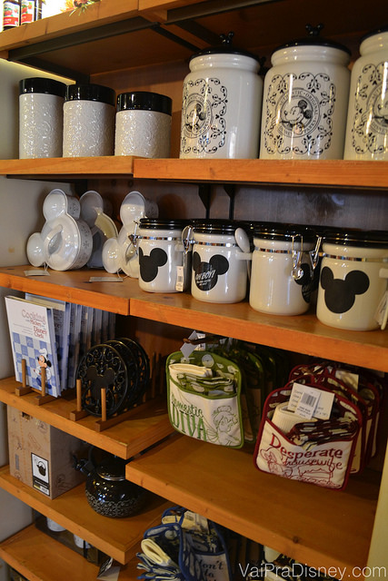

Lojas Recomendadas

Compras em Orlando: Itens de Cozinha
Quem me conhece sabe o quanto eu adoro cozinhar, mas pouca gente sabe como sou compulsiva com compras de itens de culinária. Seja livros, eletroportáteis ou utensílios culinários, não importa: sou uma viciada declarada Para você ter uma idéia do nível da coisa, quando eu e o Felipe casamos, foram necessárias duas malas apenas para levar os meus livros de cozinha para a casa nova. Se você fizer uma rápida avaliação de todas as coisas de cozinha que eu comprei ao logo dos anos, mais da metade vieram na minha mala diretamente de Orlando. Montar uma listinha de itens de cozinha que quero comprar é parte do planejamento de qualquer viagem minha para os Estados Unidos.
Como alimento este vício por culinária há alguns anos, acabei conhecendo bem as lojas do assunto em Orlando. Nunca postei nada sobre o tema aqui no blog porque achava que poucas pessoas se interessavam, mas vendo os comentários dos leitores aqui, percebi que não estou sozinha no meu entusiasmo pela gastronomia. Então hoje vou contar um pouquinho das principais lojas de cozinha que nunca deixo de visitar quando vou a Orlando.
Le Gourmet Chef
Pronto! Já entreguei de cara uma das minhas lojas preferidas para vocês. Quem passa pela Le Gourmet Chef no Premium Outlet da International Drive pode não dar nada para esta loja, mas é uma das mais completas de Orlando. Sua “loja mãe” que também ficava na International Drive, em um centrinho de compras menor, era melhor ainda mas fechou. Por isso aproveitem muito desta unidade do Premium que continua firme e forte.
O que eu mais gosto dessa loja é que além de ser HIPER completa, os vendedores costumam ser bem simpáticos (apesar de só falarem inglês). Nenhum deles te apressa e te dão todo o suporte ou espaço que você quiser para ficar horas na loja vendo os produtos com calma. A loja é tão aconchegante que tem até uns snacks para você experimentar enquanto está lá. São apenas pastinhas com biscoitinhos que eles vendem na loja, mas eu acho que é um detalhe legal que te faz sentir ainda mais á vontade ali.
Como eu disse, é uma das lojas mais completas de cozinha da cidade na minha opinião. Lá você encontra desde utensílios bizarros que você não sabe pra que serve, até eletroportáteis e toda sorte de materiais de confeitaria que você pode imaginar. Se você gosta de cozinhar, minha dica é que se dedique a essa loja. Vá para ver com calma todos os produtos que eles vendem, desde as bobagens interessantes como um kit para você fazer a cebola igual do outback ou o material para preparar um funnel cake em casa, até as diferentes formas e confeitos de bolos e cupcakes.
Ah! E como a Le Gourmet Chef fica no outlet, você deve imaginar (e acertou!) que os preços aqui não são abusivos. Com sorte, você ainda consegue uma oferta boa usando cupons de descontos do Outlet Premium (veja mais sobre este assunto clicando aqui). Enfim, esta loja precisa estar na listinha de todo mundo que gosta de cozinhar e vai para Orlando.

Walmart
Não é exatamente uma loja de cozinha mas com certeza o departamento de utensílios domésticos do Walmart merece sua atenção. Como tudo no Walmart, em geral você encontra ótimos preços para os produtos que já sabe que quer comprar. Costuma ser a primeira loja que visito para já riscar da lista de compras os itens mais básicos que sei que posso encontrar por lá.
E se você já foi até o Walmart, fica a dica de dar uma olhada também nas prateleiras de alimentos deles. Compro muitos alimentos industrializados legais lá, desde temperos diferentes e itens de confentaria até porcarias como pipoca Orville e a Oreo com recheio duplo, dois itens que não abrimos mão de ter na dispensa!
Target Orlando
A idéia aqui é parecida com à do Walmart, também com itens mais simples por um preço legal. Como eu sempre vou na Target para comprar outras coisas, nunca deixo de ver o que eles estão vendendo para a minha cozinha. Comparando a Target ao Walmart, acho que ela tem um preço bem parecido mas em geral os produtos me parecem mais cuidados, o que me faz até comprar um ou outro item mais diferente ali também. Minha batedeira KitchenAid LINDA que eu amo tanto eu comprei na Target!
Outra coisa que eu gosto bastante da Target é o fato dela ter wifi. Eu pessoalmente gosto de pesquisar antes de comprar um item mais especial (como minha batedeira KitchenAid) e o fato de você poder entrar no Google e fazer uma pesquisa online enquanto está dentro da loja me dá muito mais segurança para bater o martelo para a compra.

Bed Bath & Beyond
Já escrevi uma matéria só sobre esta loja que é boa não só para itens de cozinha mas qualquer coisa que você queira para a sua casa (veja a matéria completa dessa loja clicando aqui). Quando fiz meu enxoval de casamento, comprei várias coisas na Bed Bath & Beyond, desde joguinhos americanos e guardanapos de pano (que só uso quando acaba o de papel e eu esqueço de comprar mais! rs) até toalhas de banho, tapetes de banheiro e um espelho de box que o Felipe queria para se barbear.
O departamento de cozinha da Bed Bath & Beyond também é bem completo e dá para perder umas boas duas horinhas nessa loja fácil fácil. Entre os itens que comprei aqui, provavelmente o meu preferido é o ralador de queijo elétrico. Amamos risoto, massa e tudo que vai queijo ralado e esse ralador mudou minha vida. Outra coisa interessante e baratinha que comprei foi um tapetinho para você deixar a taça de vinho escorrendo depois de lavar. O tapetinho é todo frizado e o copo seca sem deixar marcas. Além disso, comprei um mixer, vários potes, colheres de bambu, espátulas, medidores, etc..

William-Sonoma
Esta loja é a Disney dos itens de cozinha para mim. O Felipe sempre lembra que a primeira vez que eu entrei nessa loja, eu fiquei tão maravilhada e atordoada com tantos produtos incríveis que passei umas duas horas lá dentro e sai só com um vidrinho essência de baunilha. Quando ele me viu saindo da loja, me olhou com cara de interrogação, não entendendo como eu não estava carregando mil sacolas. Eu só respondi “Preciso pensar antes de tomar qualquer atitude”. Eram muitos produtos legais para espaço de mala e dinheiro limitado, as escolhas foram muito difíceis.
Tudo na William-Sonoma é de ótima qualidade, acabamento maravilhoso e preços não tão amigáveis. Nada proibitivo, não se preocupe! Só não é tão baratinho como a Le Gourmet Chef e o Walmart! Verdade seja dita: algo no clima da William-Sonoma me soa meio esnobe demais para o meu gosto, mas aprendi a nem ligar e acho que você não deveria ligar também. Os vendedores sempre são educados e vale muito conferir os produtos.
Além dos utensílios e ingredientes super legais vendidos na William-Sonoma, esta loja também tem diversos livros de culinárias bem interessantes. Eu tenho alguns e gosto bastante das receitas. Além disso, essa é mais uma loja bem completa. Veja alguns dos itens só encontrei aqui: medidor de macarrão (não me julgue!) e a assadeira de pão francês (ainda não fiz, mas vou fazer!). Eles também vendem a marca de essência de baunilha que eu mais gosto e recomendo muito. Se você gosta bastante de cozinhar, pode parecer um detalhe mas eu não brinco quando o assunto é baunilha. Se eu não posso usar a fava (ou a receita não pede), faço questão de usar uma boa essência. Eu detesto a essência da Fleischmann, pronto falei. A da Dr. Oetker é boa, preciso ser justa, mas esta que eu compro na William-Sonoma é melhor, vai por mim. Fora que o vidro é grande então você pode usar por bastante tempo. Outro ótimo produto dessa mesma marca é a pasta de baunilha, uma ótima opção para quem quer fazer uma receita com a fava mas mora em algum lugar onde é difícil (ou caro) achar este produto pra vender. Essa pasta de baunilha é um concentrado com sementinhas da fava de baunilha com um sabor bem acentuado. Fica a dica para quem quer fazer um créme brûlée especial. Aliás, falando em créme brûlée, o maçarico culinário da William-Sonoma não é caro e é o melhor que já comprei. Sou fã desse maçarico!
Por fim, um último ponto interessante sobre a William-Sonoma: eles fazem algumas aulas de culinária em algumas das lojas de tempos em tempos. É uma programação mais voltada para os residentes de Orlando mas se for de seu interesse, pode conferir a programação para sua viagem através do site deles.
Crate & Barrel
Loja americana de produtos para a casa com vários produtos legais também. Descobri a Crate & Barrel sem querer quando a vitrine da loja me atraiu uma vez. Desde então, virei fã! A idéia aqui não é comprar itens básicos não, mas itens especiais. Digo isso porque nem a variedade é tão grande nem o preço é tão bom assim. O ponto forte das coisas da Crate & Barrel é a beleza e originalidade. Eles tem muitos itens de cozinha, varanda e até sala para enfeitar a sua casa e são todos bem legais.
Na Crate & Barrel eu já comprei alguns potes mais bonitos para minha cozinha, um porta utensílio, um porta sal e uma panela de ferro (a mala tava leve…aproveitei e comprei uma panela de 5 kg!). No ano passado, comprei vários itens de natal na Crate & Barrel. Como eu já disse no blog em outros momentos, eu amo o natal e os enfeites Crate & Barrel estão entre os mais bonitos que já vi e são os mais bonitos que já comprei.
Amazon
Quando faço minha listinha de compras, já vou colocando tudo que posso no meu carrinho da Amazon. Qualquer item que possa ser mais chatinho de encontrar e está por um preço bom na Amazon, compro por lá mesmo. Assim libero mais o meu tempo em Orlando para outras compras ou parques. E o melhor de tudo é que a Amazon não é boba nem nada e já sacou que eu amo itens de cozinha. Sempre que recebo email da loja, eles me sugerem alguns produtos que são a minha cara e eu fico morrendo de vontade de comprar! Se não quiserem ser tentados, nunca abram os emails que a Amazon te mandar. Clique aqui para acessar a matéria que fizemos sobre a Amazon explicando tudo sobre a loja e o passo a passo de como comprar por lá.
Eu não sei você, mas eu adoro o sentimento de chegar no hotel para descobrir que um pacotinho chegou no meu nome. Aliás, um pacotinho é bondade a minha, né? Porque não costuma ser um pacote só e não costumam ser nada “inhos”. Entre os itens de cozinha que eu já comprei na Amazon (e a lista é bem grande) estão pelo menos 10 livros de receitas, um processador de alimentos incrível, algumas seladoras de alimento a vácuo (outra invenção que sou fã), uma sorveteira (para o Fe que também gosta de cozinhar e é especialista em sorvetes artesanais) e vários cortes e varais de massa macarrão. Além disso, já tenho vários livros (inclusive alguns da William-Sonoma) na minha lista de desejos da Amazon para eu ir comprando aos poucos.
Itens de cozinha da Disney
Nas principais lojas da Disney e em algumas outras lojas específicas, são vendidos itens de cozinha com temas Disney. Pode parecer infantil, mas costumam ser bem bonitinhos e muitos são bem discretos. Aqui, a minha dica é comprar produtos que você considere bonitos, mas que não tenham uma funcionalidade muito importante. Sendo bem honesta, apesar de gostar dos produtos da Disney, acho que muitos deles têm uma qualidade mais ou menos.
Eu comprei uma luva térmica no formato da mão do Mickey uma vez e quando fui usar para tirar a lasanha do forno, quase derrubei a travessa pois o negócio esquentou super rápido. Foi a pior luva térmica que eu já tive. Térmica é apelido para essa luva! De qualquer forma, já comprei e continuo comprando outros itens menores como paninhos, porta copos, uma travessa de madeira e ímãs de geladeira.

O melhor produto de cozinha da Disney é sem sombra de dúvidas a coleção de livros de receitas. Faço questão de enfatizar: são livros MUITO bons. Minha coleção de livros de receitas é bem grandes e todos os livros da Disney estão entre os melhores que tenho. Eu particularmente acho que estes são daqueles livros que vale a pena comprar mesmo se você gosta de cozinhar mas não se sente tão seguro assim. Muitas receitas são relativamente simples e resultam em pratos lindos e deliciosos. Fica a dica de comprar estes livros, talvez a melhor dica da matéria inteira se você gosta de cozinhar.
Container Store
Também já escrevi sobre esta loja que é o paraíso da organização da casa inteira, inclusive da cozinha. A loja é recheada de idéias e sacadas interessantes para ajudar a botar sua casa e sua cozinha em ordem. A variedade de potinhos e compartimentos é gigante. Clique aqui para acessar a matéria e entender mais dessa loja e ver várias idéias de produtos interessantes para sua casa.
A “pequena” quantidade de potinhos da Sur La Table
Le Creuset – Outlet Premium
Além da Le Gourmet Chef, o outlet Premium da International Drive tem uma loja da Le Creuset, sonho de consumo de quase todo mundo que gosta de cozinhar. A loja vende não só panelas, mas também utensílios, chaleiras, livros e todos com preços bem legais. Eu já encontrei por lá panelas lindas em promoção simplesmente porque não renovaram a coleção daquela cor, então elas ficaram como ponta de estoque. Eu comprei uma panela linda nessa promoção.
Macy’s
Todo mundo lembra da Macy’s só para comprar roupa mas os outros departamentos também são ótimos, inclusive o de cozinha. O melhor é que a Macy’s vive tendo alguma promoção rolando como falamos na matéria dessa loja (que você encontra aqui) e essas promoções valem para todos os setores, inclusive o de cozinha. Eu nunca deixo de conferir as promoções por lá. Com preço cheio, só comprei coisas pequenas como assadeiras, potes e balança de cozinha. Já durante estas promoções, aproveitei e comprei um liquidificador e um conjunto de facas maravilhoso. As facas são tão afiadas que tenho até que tomar cuidado. O importante é: nunca deixe de ver as promoções da Macy’s quando estiver planejando suas compras.

Cartão de desconto de 10% para brasileiros na Macy’s. Vale bastante a pena!
Anthropologie
Essa loja é na verdade uma loja de roupas com alguns itens de casa, que são mais decorativos do que funcionais. Você não vai encontrar nenhum eletroportátil à venda aqui, mas vários pequenos itens de cozinhas bonitinhos que enfeitam sua cozinha. Eu comprei uma mantegueira vermelha e dois porta ovos que eu gosto bastante, além de alguns aventais. Como fica do lado da William-Sonoma, não custa nada dar uma passadinha por lá. Além do que, as roupas são bem legais. Metade do meu guarda-roupa é dessa loja.
Extra: Sur La Table
Essa loja não existe em Orlando mas é uma das lojas mais incríveis de culinária que já visitei na vida. Conheci em Nova York (no Soho) para depois encontrá-la em outras cidades dos Estados Unidos também, inclusive algumas na Flórida. Acho uma pena não ter em Orlando, mas se durante a sua viagem você estiver programando ir para algumas das cidades listadas abaixo, considere dar uma passadinha na Sur La Table também. Ela é um verdadeiro paraíso de itens de cozinha, talvez a loja mais completa de todas e com preços honestos. Na Flórida, ela é encontrada nas seguintes cidades:
- Aventura
- Boca Raton
- Coconut Creek
- Naples
- Palm Beach Gardens
- Pembroke Pines
- Sarasota
Marshalls
Este pode até não ser o seu foco quando você visitar estas lojas que são campeãs em preço, mas não deixe de dar uma olhada no que estão oferecendo de itens para a casa, em especial para cozinha. Já vi venderem pratos lindos por exemplo e claro, com os preços lá embaixo. Se você já estiver planejando visitar essas lojas, vale sair do setor de moda e esticar a visita para o departamento vizinho.
Espero que aproveitem estas lojas e encontrem boas idéias para encher ainda mais a sua mala de volta para o Brasil. E se pretende comprar, não deixe de ver as nossas dicas gerais para aproveitar melhor as compras (clicando aqui) e dicas de segurança nas compras (clicando aqui).